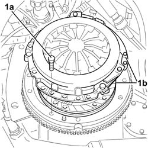
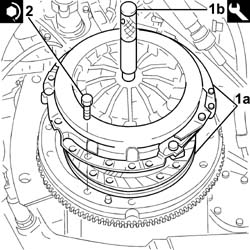

1810A24 clutch - r + r with gearbox removed
- Path
- Procedures > 18 CLUTCH UNIT > 1810 CLUTCH MECHANISMS > 1810A CLUTCH MECHANISM > 1810A24 clutch - r + r with gearbox removed
- Kind
- repair procedure (removal / refitting; the operation number is the code)
- Applies to
- all engines; all production periods
- Interactive page
- https://sloeber94.github.io/elrnDB-fPnd/en/#/2752648
Applies to: all engines; all production periods
 Removing
Removing
 Refitting
RefittingFit the flywheel lock in position.
 | Name | Country |
|---|---|---|
- | Counter-torque | 1.860.846.000 |
1. Undo the fixing bolts (1a) and remove the clutch complete with plate and pressure plate (1b).

Applies to: all engines; all production periods
Refitting
Removing1. Fit the clutch assembly (1a) in its seat and centre the clutch in relation to the crankshaft using the tool (1b).
| Name | Country |
|---|---|---|
1b | Clutch centering | 1.870.418.000 |
2. Tighten the bolts fixing the clutch to the recommended torque.
 | Fastening | Component | Ø | Value (daNm) |
|---|---|---|---|---|
2 | Bolt | CLUTCH ASSEMBLY | M6 | 1 |

Applies to: all engines; all production periods
Remove the flywheel lock.
| Name | Country |
|---|---|---|
- | Counter-torque | 1.860.846.000 |
Remove the clutch locating tool.
| Name | Country |
|---|---|---|
- | Clutch centering | 1.870.418.000 |
Topics that link to this page (13)
- C27 THE ENGINE REVS INCREASE WHILST CHANGING GEAR
- E01 CLUTCH NOT RELEASING CORRECTLY
- E02 CLUTCH SLIPPING
- E03 CLUTCH VIBRATING OR JERKING
- E10 CLUTCH PEDAL HARDENING
- 1020D26 FLYWHEEL SIDE OIL SEAL COVER - R+R
- 1020D38 flywheel side oil seal - replace
- 1024B10 engine flywheel - r + r for versions with manual gearbox
- 1024B12 engine flywheels rr for versions with manual gearbox and air contioner
- 1024B13 ENGINE FLYWHEEL - R.R. FOR MODELS WITH MECHANIC TRANSMISSION AND FOUR-WHEEL DRIVE
- 1810A20 clutch - r + r
- 1810A28 clutch - r r for manual gearbox with hydraulic selection versions
- 1810A30 CLUTCH - R.R. FOR FOUR-WHEEL DRIVE MODELS